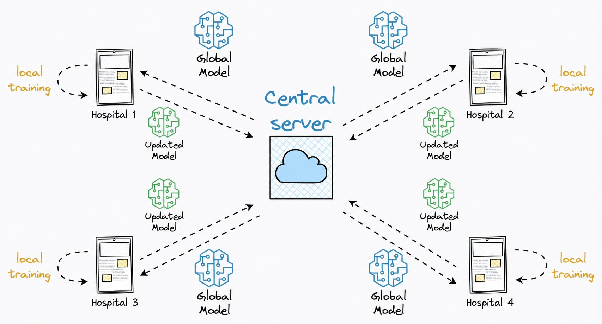
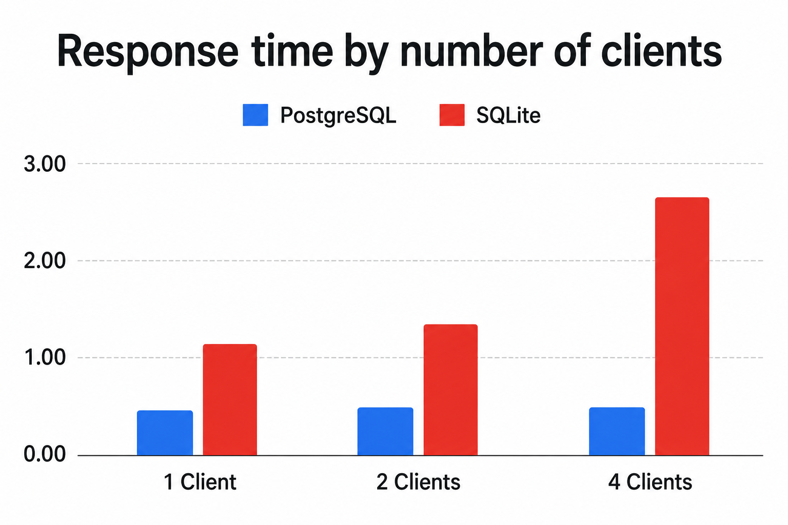
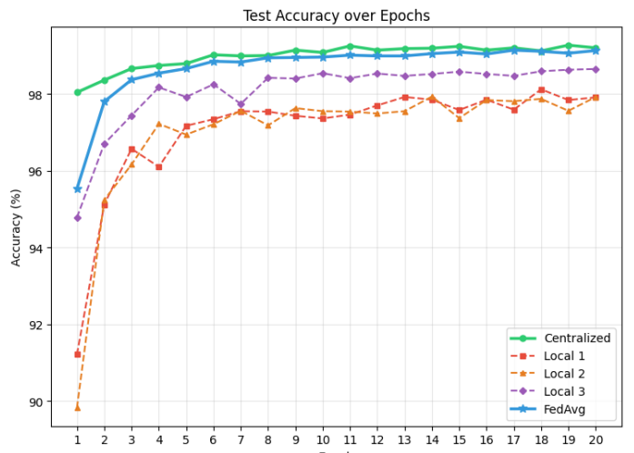
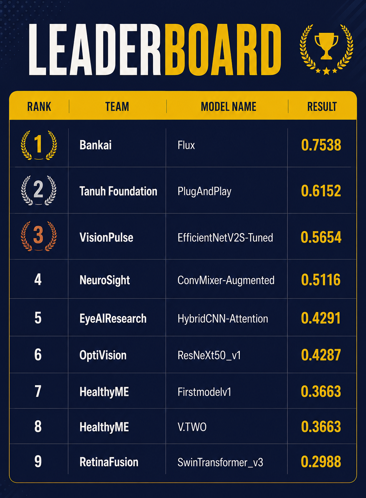

federated healthcare
What we'll cover
Healthcare AI faces two structural crises
- Data silos : Patient records are sensitive and regulated — they cannot be centralised for training.
- Trust deficit : Models are self-evaluated on internal test sets — inviting overfitting, data leakage, and inflated claims.
- Real World Usage : Federated Learning solves silos in theory, but no existing frameworks in real world healthcare.
- Model Evaluation : No trustworthy, independent evaluation exists for clinical AI.
Plumbing and trust, built together
The communication, security, and scalability layer that makes federated learning survive real hospital networks.
The trust layer — independent evaluation, accessible deployment, and verifiable evidence for clinical decisions.
Shared goal: make FL production-ready and its outputs trustworthy.
Share the updates, never the data
- Data stays local; only model weight updates leave the hospital.
- A central server aggregates those updates into a global model.
- Academic assumption: communication is instant, reliable, and free.
- Reality: Intermittent connectivity, and wildly heterogeneous hardware.

infrastructure
Why the original pipeline failed
- A persistent, synchronous, server-driven socket pipeline.
- Hospital firewalls and NAT broke connections; a single dropout doomed the whole training round.
- Thousands of concurrent nodes at national scale were architecturally impossible.
An event-driven Publish–Subscribe architecture
- Server publishes events (e.g. ROUND_START) to topic channels.
- Clients subscribe, fetch weights via REST, disconnect, train locally, then push updates back.
- Server becomes an asynchronous state machine — not a blocking loop controller.
- Server state is decoupled from any single client's connectivity.

Five key transformations
The server sums updates while staying blind
- Goal: compute the sum of updates without seeing any single client's weights.
- Pairwise secret sharing — clients add random masks that cancel on aggregation.
- Intercepted payloads look like meaningless noise, even to the server.
- Shamir's Secret Sharing provides dropout recovery — re-engineered for a stateless, async world.
Hadoop out, local file system in
- Hadoop/Spark's JVM overhead was starving GPU training.
- Empirically, hospital datasets rarely exceed gigabyte scale — a distributed FS was unjustified.
- Rearchitected to local processing (Pandas, native PyTorch DataLoaders).
- Result: a single executable, orders-of-magnitude faster loading, higher admin trust.
SQLite → PostgreSQL
- SQLite suffered catastrophic locking failures under concurrent national load.
- Migrated to PostgreSQL with MVCC and connection pooling.
- Now handles hundreds of simultaneous writes without data loss or timeout cascades.

Convergence under non-IID data
- Controlled MNIST experiment simulating hospital "data-silo" conditions.
- Compared centralised (upper bound), isolated, and federated training.
- Confirms the FL implementation converges correctly — distinct from the scale/concurrency test.

& deployment
The evaluation crisis
- Kaggle — requires publicly disseminating datasets (a privacy bottleneck).
- Public benchmarks — decay through repeated hypothesis testing.
- MLPerf — closed, consortium-driven; not open or continuous.
- The gap: independent, privacy-preserving, reproducible third-party evaluation.
A hidden-dataset evaluation paradigm
- Strictly decouple model development from model evaluation.
- Curated clinical data lives hidden on the server — never exposed via any API.
- The developer never sees the test set — data leakage and overfitting are mathematically eliminated.
- Produces tamper-evident, regulatory-grade evidence; continuous enrichment fights benchmark decay.
A network-isolated Docker sandbox
- Every submission runs in an ephemeral container with --network none; exfiltration fails at the kernel.
- The hidden dataset is mounted read-only; cgroups cap CPU, RAM, and time.
- Only stdout (predictions) leaves; the container is destroyed immediately after.
A leaderboard with a provenance trail
- Performance is published openly — good or bad.
- Each entry is cryptographically tied to a model hash, dataset version, and timestamp.
- A verifiable audit trail — evidence for governance boards and regulators (FDA / EMA / CDSCO).
A productized desktop FedClient
- The barrier is operational, not mathematical — hospital IT staff aren't ML engineers.
- An Electron app bundles Python, PyTorch, and crypto libraries into one double-click binary.
- Outbound-only connections bypass firewalls and NAT — zero custom IT config.
- One-click auth, live training visualization, schema mapping for data heterogeneity.
Script-based extensibility
- Model definition is decoupled from the platform pipeline.
- Researchers upload arbitrary architectures via solution.py + a ZIP of weights.
- "Model testing without training" — benchmark pre-trained models without joining FL.
- The platform loads and runs any model with no core code changes.
The national hackathon
- A real proxy for a national hospital network under chaotic, concurrent load.
- 300+ independent teams — data scientists, hospital IT, and academics.
- Three clinical problems: diabetic retinopathy, bone-age prediction, cataract detection.
- Public training data given; hidden data secured on the server for evaluation.

The results
Novel architectures — Vision Transformers, ensembles — ran with zero pipeline errors.
Combined contributions
Resilient FL core
Event-driven Pub/Sub architecture, async-compatible secure aggregation, and pragmatic edge + database engineering.
Evaluation ecosystem
Hidden-dataset evaluation, containerised isolation, and a provenance-backed public leaderboard.
Deployment layer
A productized Electron client and script-based extensibility for any model architecture.
Limitations
- Validated on single-modality classification and regression only.
- No fairness or explainability auditing yet.
- Dataset enrichment is passive — driven by contributor submissions.
- Regulatory acceptance remains a policy question, not just a technical one.
Future work
- Multi-modal and foundation-model evaluation — imaging, notes, and genomics together.
- Fairness and explainability auditing built into the pipeline.
- Asymmetric weight sharing for model copyright.
- Active-learning-based benchmark curation.
FL at national scale is a systems problem — not just an algorithm problem.
BODH.AI is a battle-tested, privacy-preserving, trustworthy national standard for clinical AI — bridging academic theory and real hospital deployment.